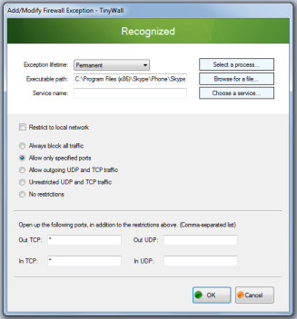
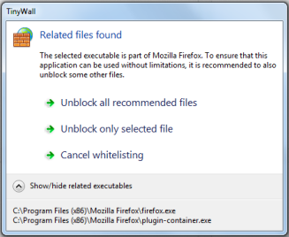
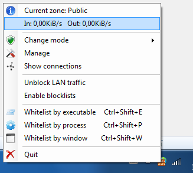

What's new in TinyWall
This page presents a user-friendly overview of TinyWall's version history.
A detailed changelog can be found here.
Version 2.1
- All previously reported issues fixed.
- Removed automatic network zone switching.
- Enhanced support for Windows 8 and Metro applications.
- Multi-user/multi-session support.
- New Dutch, German, Hungarian, Spanish and Russian translations.
- Better authenticode verification support.
- Improved startup performance.
- Ability to disable global shortcuts, as well as numerous other usability enhancements.
Version 2.0
TinyWall 2.0 incorporates a wide range of new features, many which has been requested by the user community. All aspects of the application are improved, including security, user friendliness, compatibility, performance and stability. TinyWall 2.0 features:
- Easier first-time setup. The search for most recognized applications has become blazing-fast and TinyWall will automatically whitelist known and trusted applications when starting for the first time.
- Added new learning mode. In this mode TinyWall will observe what applications use the internet and how, and remember them in normal mode. Setting up complex applications or a freshly installed system becomes a piece of cake. Just start learning mode, use the applications, then switch back to normal mode.
- A greatly rewritten firewall exception dialog. No more confusing profiles, only a streamlined and simpler interface and a direct possibility to manually specify ports.
- The ability to restrict applications, one by one separately, to the local network.
- TinyWall 2.0 installs and uninstalls like any other application. By common request it can now be removed from the Control Panel.
- Better support for built-in Windows features. TinyWall 2.0 can now be expected to work well and be compatible with Windows Networking, Remote Desktop, Remote Assistance and other network-related Windows features.
- Easier whitelisting of complex applications by recognizing related files. If an executable needs additional files whitelisted to work correctly, TinyWall will automatically notify and offer you to whitelist those files when you try to unblock it.
- Domain blocklist support. Implemented by installing a custom hosts file, this feature will keep you safe from many malicious websites and increase your browsing speed by blocking trackers and ads. This feature is disabled by default and needs to be turned on explicitly. TinyWall will keep the hosts file updated to ensure you always get the latest protection. (Currently the MVPS hosts file is used.)
- Hosts file protection. A common web-related attack by malicious code is redirecting the user to fake sites to phish data or install further bad code. TinyWall will lock the hosts file to ensure its protection and prevent malicious redirection using the hosts file.
- Mouse picking of windows with higher privileges. In v1 when TinyWall's controller was not running elevated, it was impossible to whitelist another application that is running with admin rights by mouse picking (by window). You either needed to use a different method or you needed to elevate TinyWall too. TinyWall 2.0 allows you to whitelist most admin applications by window without having to elevate TinyWall itself.
- Saving of settings without breaking existing connections. TinyWall will no longer break existing TCP connections when applying firewall settings.
- New updater system. The updater now supports updating not only the application, but also the data components separately. It will naglessly keep your hosts file (if enabled) and the recognition database up-to-date without you having to install new versions of TinyWall.
- Traffic rate monitor. This is a feature in the form of a tray menu entry that will always tell you the current total download and upload rate of your computer.
- Connections window shows blocked applications. The Connections window will now optionally show you what the firewall has blocked recently, and a right-click menu allows you to either unblock or close processes. Even multiple at once.
- Increased performance. Reorganized code and a parallelized load process make TinyWall 2.0 start much faster than earlier versions and firewall settings take less time to apply.
- Remember the last used firewall mode. TinyWall 2.0 saves the firewall mode between reboots (with the exception of the Disabled and Learning modes, which will not be remembered).
- Digitally signed applications executables. All binaries shipped by TinyWall are signed using a recognized digital certificate. A digital certificate assures users that the author is no fictional person and it will identify all software releases coming from me. It means that as long as Windows is telling you that TinyWall has been published by "Károly Pados" and that it is valid certificate, you can be sure that the TinyWall you have downloaded really is from me and that it has not been compromised by others since its release.
- Localizability. The interface in 2.0 can be translated to other languages, as of 2.0 a French translation is included in the distribution.
- Improved support for accessability, keyboard navigation and screen readers.
- Support for running in a virtualized environment.
- Support for quickly filtering the list of application exceptions. Makes it a breeze to search for something in a long list.
- From the Connections window, you can easily initiate searches for processes on VirusTotal, ProcessLibrary and Google.
- Support for Windows 8 (tested on CTP) and .Net Framework 4.


